class: center, middle .title[Time Series Analyses in a Changing Climate] .author[Shane Elipot] .institution[The Rosenstiel School of Marine and Atmospheric Science, University of Miami] .coauthor[Jonathan Lilly] .institution[NorthWest Research Associates, Seattle] .date[November 8, 2016] .note[Sponsored by: the FP7 Integrated Infrastructure Initiative FixO3; the Horizon 2020 project ENVRIplus; the Arctic Marine Geology and Geophysics (AMGG) Research School] .footnote[Created with [{Remark.js}](http://remarkjs.com/) using [{Markdown}](https://daringfireball.net/projects/markdown/) + [{MathJax}](https://www.mathjax.org/)] --- name: foreword class: left, .toc[[✧](#toc)] # Foreword This Tromsø lecture is heavily based on a longer course (The Oslo Lectures) given by Jonathan M. Lilly in Oslo at the invitation of the Norwegian Research School in Climate Dynamics (ResClim), during the week May 23–27, 2016. JML's Oslo Lectures are freely available for online viewing or download at [{www.jmlilly.net/talks/oslo/index.html}](http://www.jmlilly.net/talks/oslo/index.html) This current Tromsø lecture is available for download on my website at [{selipot.github.io}](https://selipot.github.io) under [{Talks}](). The practical session this afternoon will be conducted using the [{Matlab}](https://www.mathworks.com/products/matlab/) computational software and the freely available Matlab toolbox **jLab** written by Jonathan Lilly and freely available [{here}](http://www.jmlilly.net/jmlsoft.html). Please download, install, and test the toolbox before the practical session. In addition, we will be using the code and data I have made available for download [{here}](). --- name: toc class: left, .toc[[✧](#toc)] # Outline 1. [Descriptive statistics (the time domain)](#timedomain) 2. [Stationarity, non-stationarity, and trends](#stationarity) 3. [Fourier Spectral analysis](#spectral) 4. [Bivariate time series](#bivariate) 4. [Epilogue](#epilogue) 4. [Practical](#practical) --- name: timedomain class: center, middle, .toc[[✧](#toc)] # 1. Descriptive Statistics (The time domain) --- class: left, .toc[[✧](#toc)] # The Sample Interval We have a sequence of `$N$` observations `$$x_n, \quad\quad n=0,1,2,\ldots N-1$$` which coincide with times `$$t_n, \quad\quad n=0,1,2,\ldots N-1.$$` <!--It is a little strange to start counting at zero, but this makes life easier later.--> The sequence `$x_n$` is called a *discrete time series*. It is assumed that the *sample interval*, `$\Delta_t$`, is constant `$$t_n=n\Delta_t$$` with the time at `$n=0$` defined to be `$0$`. The *duration* is `$T=N\Delta_t$`. If the sample interval in your data is not uniform, the first processing step is to interpolate it to be so. --- class: left, .toc[[✧](#toc)] # The Underlying Process A critical assumption is that there exists some “process” `$x(t)$` that our data sequence `$x_n$` is a *sample of*: `\[x_n=x(n\Delta_t), \quad\quad n=0,1,2,\ldots N-1.\]` Unlike `$x_n$`, `$x(t)$` is believed to exist for *all times*. (i) The process `$x(t)$` exists in *continuous time*, while `$x_n$` only exists at *discrete times*. (ii) The process `$x(t)$` exists for *all past and future* times, while `$x_n$` is only available over a certain time interval. <!--The process `$x(t)$` represents an idealized physical process that continues for all times.--> It is the properties of `$x(t)$` that we are trying to estimate, *based on* the available sample `$x_n$`. --- class: left, .toc[[✧](#toc)] # Measurement Noise In reality, the measurement device and/or data processing probably introduces some artifical variability, termed *noise*. It is more realistic to consider that the observations `$x_n$` contain samples of the process of interest, `$y(t)$`, *plus* some noise `$\epsilon_n$`: `\[x_n = y(n\Delta_t)+ \epsilon_n, \quad\quad n=0,1,2,\ldots N-1.\]` This is an example of the *unobserved components model*. This means that we *believe* that the data is composed of *different components*, but we cannot observe these components individually. The process `$y(t)$` is potentially obscured or degraded by the limitations of data collection in three ways: (i) finite sample interval, (ii) finite duration, (iii) noise. Because of this, the time series is an *imperfect* representation of the real-world processes we are trying to study. <!--Q: What are some examples of measurement noise?--> --- class: left, .toc[[✧](#toc)] # Time versus Frequency There are two complementary (opposite) points of view regarding the time series `$x_n$`. The first regards `$x_n$` as being built up as a sequence of discrete values `$x_0,x_2,\dots x_{N-1}$`. This is the domain of *statistics*: the mean, variance, histogram, etc. When we look at data statistics, generally, the order in which the values are observed *doesn't matter*. The second point of view regards `$x_n$` as being built up of sinusoids: purely periodic functions spanning the whole duration of the data. This is the domain of *Fourier spectral analysis*. In between these two extremes is wavelet analysis which is not covered here, see the Oslo lectures. --- class: left, .toc[[✧](#toc)] # Time-Domain Statistics A good place to start is with the very simplest tools. The *sample mean* describes a “typical” value: `\[\hat{\mu}_x \equiv \frac{1}{N}\sum_{n=0}^{N-1} x_n\]` The *sample variance* gives the spread about the mean: `\[\hat{\sigma}_x^2 \equiv \frac{1}{N}\sum_{n=0}^{N-1} \left(x_n-\hat{\mu}_x\right)^2\]` “Sample” here means that it is computed from the observed data, as opposed to being a property of the assumed underlying process `$x(t)$`. That's why we use `$\hat{\cdot}$`. The mean and variance are called the first two *moments* of the distribution of values associated with the process. --- class: left, .toc[[✧](#toc)] # Example 22-year time series of Agulhas current transport: <!-- .cite[Beal and Elipot (2016), “Broadening not intensification of the Agulhas Current since the 1990s”, in press]: --> Sample mean `$\hat{\mu}_x$` is -95 Sverdrup (1 Sv = $10^6$ m$^3$ s$^{-1}$) Sample standard deviation `$\sqrt{\hat{\sigma}^2_x}$` is 20 Sv 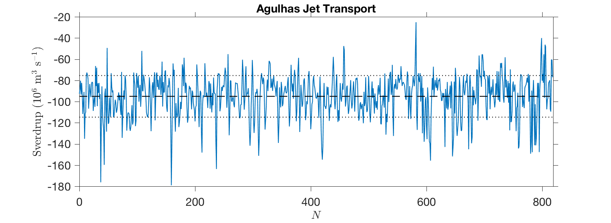 --- class: left, .toc[[✧](#toc)] # Histogram The mean, variance, skewness, and kurtosis (seen next) describe aspects of the *histogram*: the observed distribution of data values. <center>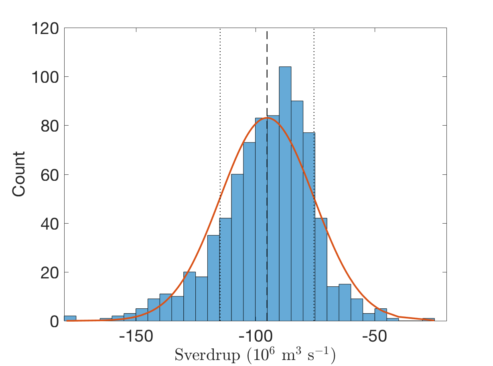</center> Here is the histogram of *all* Agulhas Jet transport (blue), versus Gaussian noise having the same mean and variance (orange). --- class: left, .toc[[✧](#toc)] # Skewness The *skewness* describes the tendency for an *asymmetry* between positive excursions and negative excursions: `\[\hat{\gamma}_x \equiv \frac{1}{\hat{\sigma}_x^3}\frac{1}{N}\sum_{n=0}^{N-1}\left(x_n-\hat{\mu}_x\right)^3\]` <center><img style="width:90%" src="./figures/Negative_and_positive_skew_diagrams.svg"></center> --- class: left, .toc[[✧](#toc)] # Kurtosis The *kurtosis* is said to either measure *peakedness* (concentration near `$\hat{\mu}_x$`), or a tendency for *long tails* (concentration far from `$\hat{\mu}_x$`): `\[\hat{\kappa}_x \equiv \frac{1}{\hat{\sigma}_x^4}\frac{1}{N}\sum_{n=0}^{N-1}\left(x_n-\hat{\mu}_x\right)^4\]` Actually, it measures both. Kurtosis is a measure of the spread of `$x_n$` about the *two points* `$\mu_x \pm \sigma_x$`. This can happen *either* for peakness *or* for long tails! .cite[See Moors (1986), “The Meaning of Kurtosis: Darlington Reexamined”.] Because the value of kurtosis for a Gaussian process can be shown to be equal to 3, one sometimes encounters the *excess kurtosis* `\[\tilde\kappa_x \equiv \kappa_x -3.\]` Values of `$\tilde\kappa_x\gt 0$` mean the data is *more kurtotic*—peaked or long-tailed—than a Gaussian, while `$\tilde\kappa_x\lt 0$` means it is less so. --- class: center, .toc[[✧](#toc)] # Illustration of Kurtosis Distributions corresponding to different values of excess kurtosis. <center>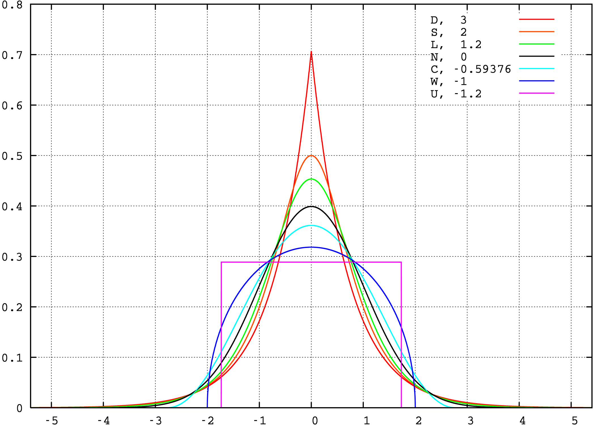</center> Positive excess kurtosis corresponds to long tails and peakedness. --- class: left, .toc[[✧](#toc)] # Example `$\hat{\gamma}_x - =0.6, \quad \hat{\kappa}_x - 3 = 1.14$`. <center></center> Here is the histogram of *all* Agulhas Jet transport (blue), versus Gaussian noise having the same mean and variance (orange). --- class: left, .toc[[✧](#toc)] # Process stats vs Estimates How can we be sure that the *sample* statistics for `$x_n$` are the statistics of the process `$x(t)$`? We can't, but we can estimate an uncertainty for our estimates, also called an *error*. As an example recall the sample mean is `$\hat{\mu}_x \equiv \frac{1}{N}\sum_{n=0}^{N-1} x_n.$` It can be shown that the theoretical variance of the sample mean is `$$ \sigma^2_{\hat{\mu}_x} \equiv \frac{\sigma^2_x}{N}.$$` so that **estimates** of the *standard error of the mean* can be calculated as $\frac{\hat{\sigma}_x}{\sqrt{N}}$. This is a general principle: abstract concepts or mathematical objects are estimated by *estimators*, which have errors (bias and variance). --- class: left, .toc[[✧](#toc)] # Example Plots of `$\hat{\mu}_x \pm \hat{\sigma}_{{\mu}_x}$` and `$\hat{\sigma}_x^2$` as a function of increasing $N$ in chronological order (blue) or reverse chronological order (orange). <center>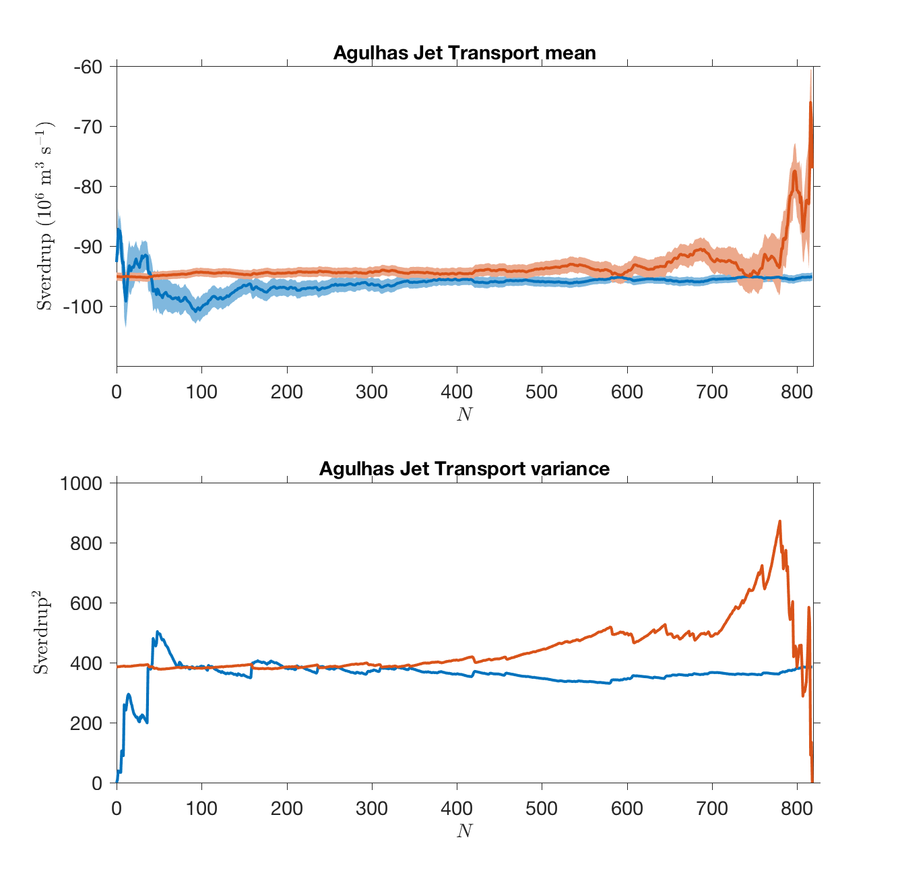</center> --- name: stationarity class: center, middle, , .toc[[✧](#toc)] # 2. Stationarity vs non-stationarity, trends --- class: center, .toc[[✧](#toc)] #First Example 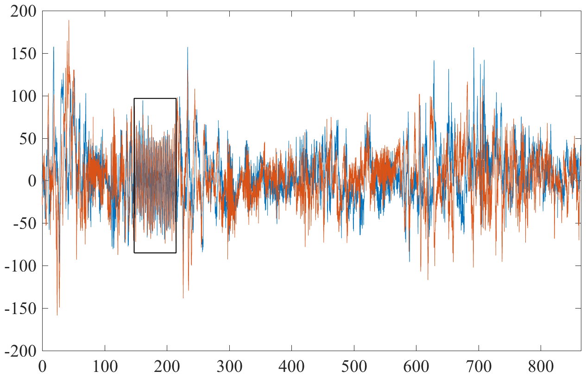 --- class: center, .toc[[✧](#toc)] #First Example 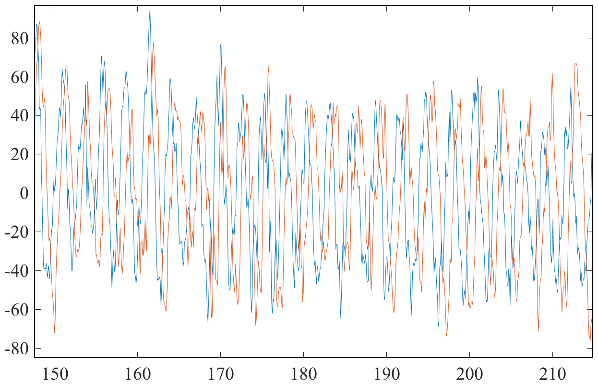 --- class: center, .toc[[✧](#toc)] #First Example 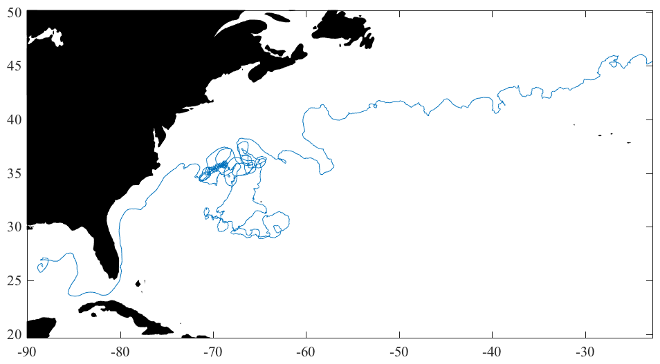 --- class: left, .toc[[✧](#toc)] # Observable Features 1. The data consists of two time series that are similar in character. 1. Both time series present a superposition of scales and a high degree of roughness. 1. The data seems to consist of different time periods with distinct statistical characteristics—the data is *nonstationary*. 1. Zooming in to one particular period show regular oscillations of roughly uniform amplitude and frequency. 1. The phasing of these show a circular polarization orbited in a counterclockwise direction. 1. The zoomed-in plot shows a fair amount of what appears to be measurement noise superimposed on the oscillatory signal. -- This is a record of velocities of a single surface drifter at 6-hour intervals. All Surface drifter data are freely available from the Data Assembly Center of the Global Drifter Program [{www.aoml.noaa.gov/phod/dac/}](http://www.aoml.noaa.gov/phod/dac/index.php). --- class: center, .toc[[✧](#toc)] #Second Example Can you guess what this time series is? 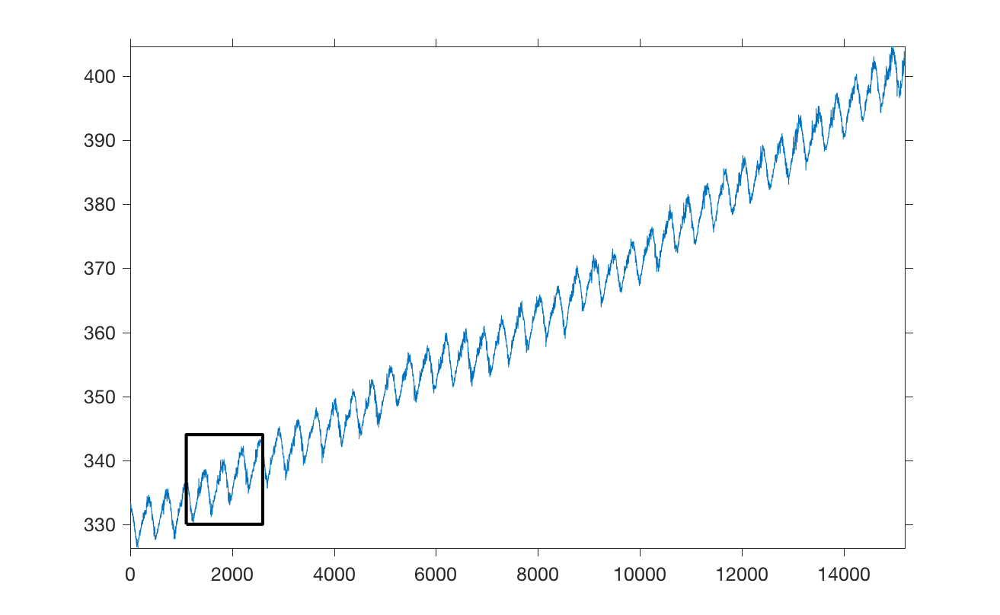 --- class: center, .toc[[✧](#toc)] # Second Example 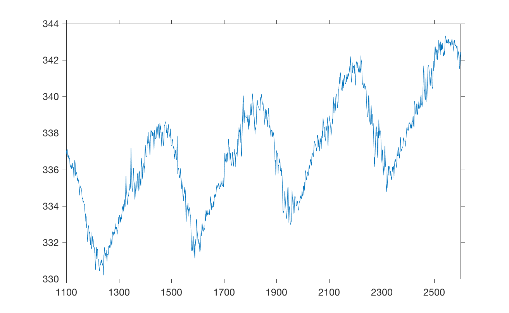 --- class: left, .toc[[✧](#toc)] # Observable Features 1. The data exhibit a very strong positive trend, roughly linear with time. Thus, this time series does not present a **mean statistics** that represents a "typical" value. 1. On top of the trend there seems to be a sinusoid-like oscillation that does not appear to change with time. 1. The zoomed-in plot shows noise superimposed on the sinusoidal and trend processes. -- This is a record of daily atmospheric CO$_2$ measured at Mauna Loa in Hawaii at an altitude of 3400 m. Data from Dr. Pieter Tans, NOAA/ESRL ([{www.esrl.noaa.gov/gmd/ccgg/trends/}](http://www.esrl.noaa.gov/gmd/ccgg/trends/)) and Dr. Ralph Keeling, Scripps Institution of Oceanography ([{scrippsco2.ucsd.edu}](http://scrippsco2.ucsd.edu/)). We will investigate further this time series during the practical session this afternoon. --- class: left, .toc[[✧](#toc)] # Non-stationarity The sample statistics may be changing with time because the underlying process (that is its statistics) is changing with time. The process is said to be “non-stationary”. Sometimes we need to re-think our model for the underlying process. Let us hypothesized that the process `$x(t)$` is the sum of an unknown process $y(t)$, plus a linear trend $a$, plus noise: `$$x(t) = y(t) + a t + \epsilon(t),$$` -- or maybe the trend is better described as being quadratic with time because of an acceleration: `$$x(t) = y(t) + b t^2 + a t + \epsilon(t).$$` -- The goal is then to estimate the unknowns $a,b$, which consists of methods of analyses generally called “parametric”. It is a bit like analyzing the data in terms of its statistics (with no prior expectations) or assuming a form for the data. --- name: spectral class: center, middle, .toc[[✧](#toc)] # 3. Fourier Spectral Analysis --- class: center, .toc[[✧](#toc)] # Complex Fourier Series It is possible to represent a discrete time series `$x_n$` as a sum of complex exponentials, a complex Fourier series: `\[ x_n = \frac{1}{N \Delta_t}\sum_{m=0}^{N-1} X_m e^{i2\pi m n/N}, \quad\quad\quad n=0,1,\ldots N-1 \]` 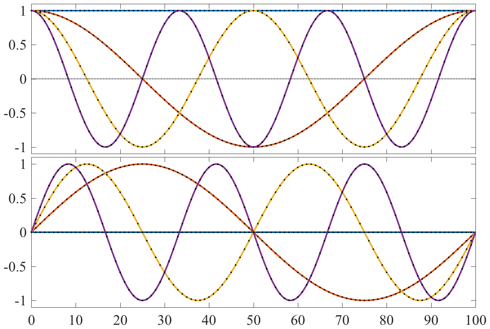 We leave out for now how to obtain the complex coefficients `$X_m$` ... --- class: left, .toc[[✧](#toc)] # About Frequency You will typically find two frequency notations: `\[ \cos(2 \pi f t)\quad\quad \text{or} \quad\quad \cos(\omega t) \]` `$f$` is called the *cyclic* frequency. Its units are cycles/time. Example: Hz = cycles/sec. `$\omega = 2 \pi f$` is called the *radian* or *angular* frequency. Its units are rad/time. The associated *period* of oscillation is `$P=1/f=2\pi/\omega$`. As `$t$` goes from `$0$` to `$1/f = 2\pi/\omega = P$`, `$2 \pi f t$` goes from `$0$` to `$2\pi$` and `$\omega t$` goes from `$0$` to `$2\pi$`. A very common error in Fourier analysis is mixing up cyclic and radian frequencies! Note: neither “cycles” nor “radians” actually have any units, thus both `$f$` and `$\omega$` have units of 1/time. However, specifying for example 'cycles per day' or 'radians per day' helps to avoid confusion. --- class: center, .toc[[✧](#toc)] #Review: Sinusoids Cosine function (blue) and sine function (orange) 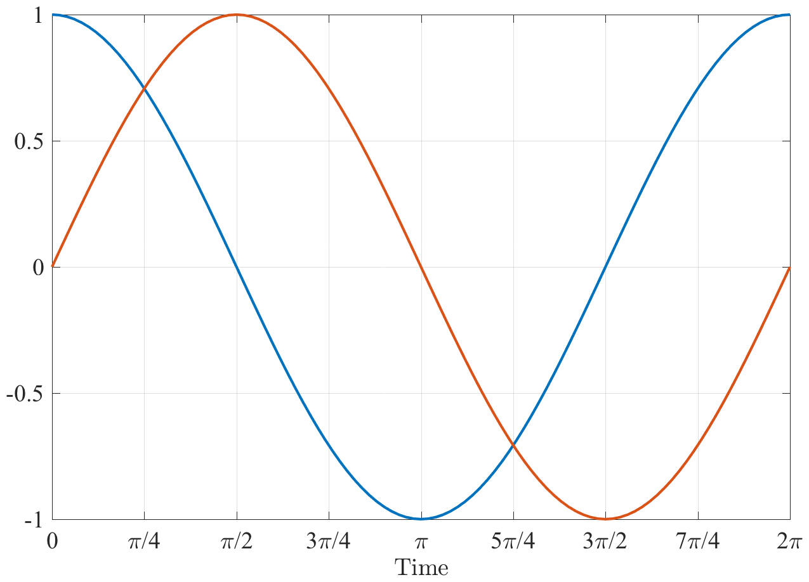 --- class: center, .toc[[✧](#toc)] # Complex Exponentials, 2D Now consider a plot `$\cos(t)$` vs. `$\sin(t)$`. That's the same as `$ \cos(t) + i \sin( t) = e^{i t}$`. <center>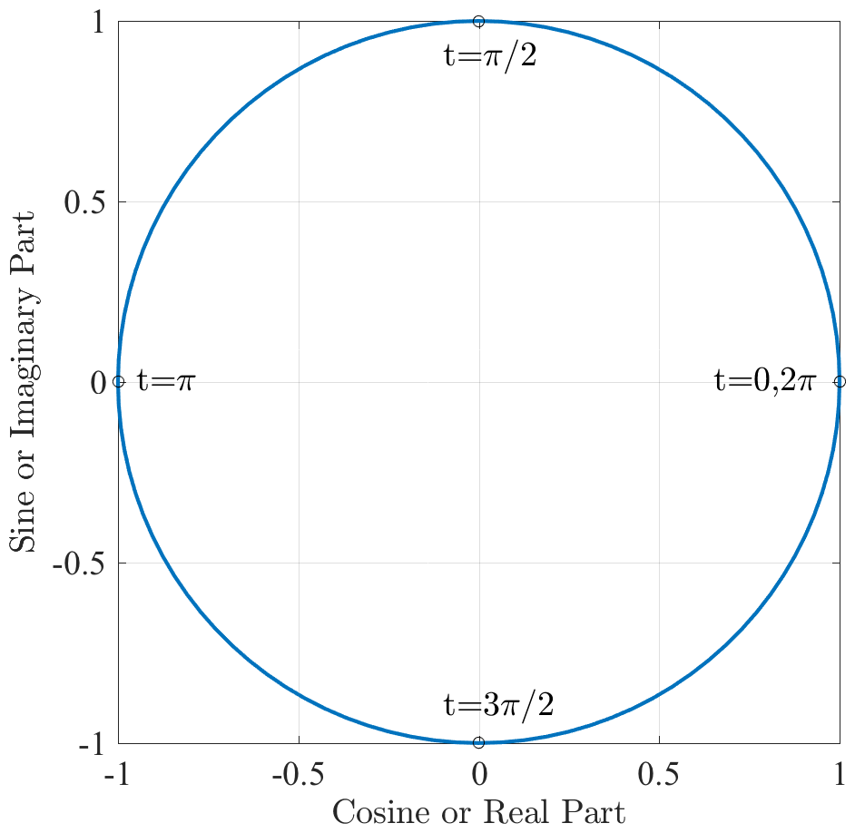 </center> --- class: center, .toc[[✧](#toc)] # Complex Exponentials, 3D This is better seen in 3D as a *spiral* as time increases. `\[\cos(t) + i \sin( t) = e^{i t} \]` <center>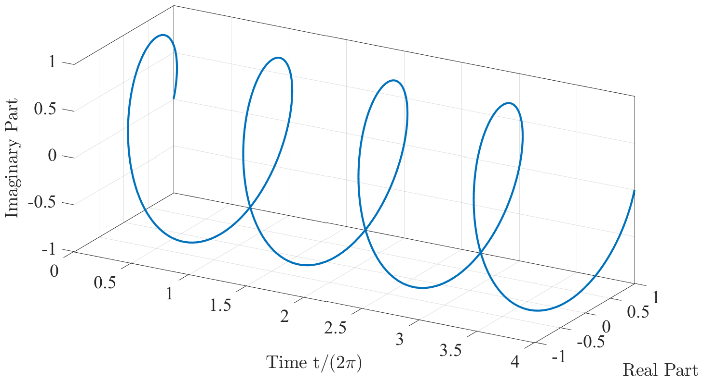 </center> --- class: left, .toc[[✧](#toc)] # The complex Fourier series The discrete time series `$x_n$` can written as a sum of complex exponentials: `\[ x_n = \frac{1}{N\Delta_t}\sum_{m=0}^{N-1} X_m e^{i2\pi m n/N} = \frac{1}{N\Delta_t}\sum_{m=0}^{N-1} X_m e^{i2\pi n \Delta_t \cdot (m/N \Delta_t)}, \quad n=0,1,\ldots N-1 \]` <!-- `\[ x_n = \frac{1}{N \Delta_t} \left[ X_0 + X_1 e^{i2\pi n \Delta_t \,(1/N \Delta_t)} + X_2 e^{i2\pi n \Delta_t \,(2/N \Delta_t)} + X_3 e^{i2\pi n \Delta_t\, (3/N \Delta_t)} +\ldots \right]. \]` --> -- The `$m$`th term behaves as `$ e^{i2\pi f_m n \Delta_t} =\cos(2\pi f_m n \Delta_t) +i \sin(2\pi f_m n \Delta_t) $`, where `$f_m\equiv m/N \Delta_t$`. Note that in the literature, `$\Delta_t$` is often set to one, and thus omitted, leading to a lot of confusion (including for me!). The quantity `$f_m\equiv m/N \Delta_t$` is called the `$m$`th *Fourier frequency*. The *period* associated with `$f_m$` is `$1/f_m=\Delta_t N/m$`. Thus `$m$` tells us the *number of oscillations* contained in the length `$N \Delta_t$` time series. <!--The next slides illustrate continuously sampling, versus discretely sampling with unit and non-unit sample interval. --> --- class: center, .toc[[✧](#toc)] # Continuous Time `$\cos(2\pi f_m t)$` and `$\sin(2\pi f_m t)$` `$f_m=0,$` `$1/100,$` `$2/100,$` `$3/100\quad\quad$` `$t=[0\ldots 100]$` --- class: center, .toc[[✧](#toc)] # Discrete Time `$\cos(2\pi f_m n \Delta_t)$` and `$\sin(2\pi f_m n \Delta_t)$` `$f_m=0,$` `$1/100,$` `$2/100,$` `$3/100\quad$` `$n=0,1,2,\dots 99\quad$` `$\Delta_t = 1$` 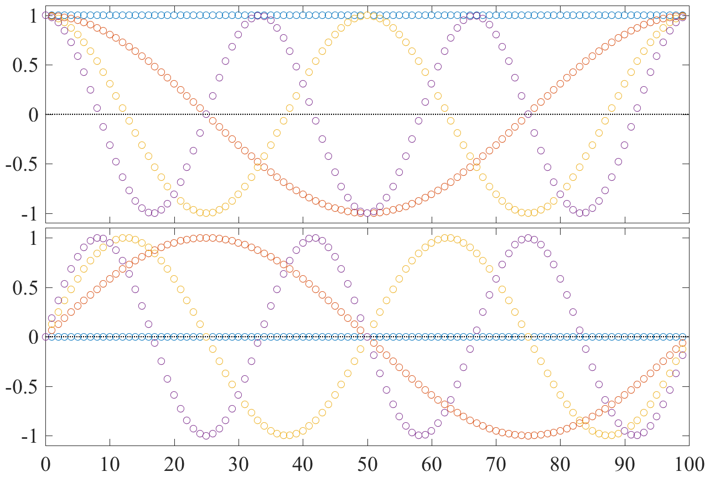 --- class: center, .toc[[✧](#toc)] # The Nyquist Frequency The single most important frequency is the *highest resolvable* frequency, the *Nyquist frequency*. `$f^\mathcal{N} \equiv \frac{1}{2\Delta_t} = \frac{1}{2}\cdot\frac{1}{\Delta_t}\quad\quad \omega^\mathcal{N} \equiv \frac{1}{2}\cdot\frac{2\pi}{\Delta_t}=\frac{\pi}{\Delta_t}$` <img style="width:80%" src="./figures/nyquistfrequency.png "> The highest resolvable frequency is *half* the *sampling rate* or *one cycle per two sampling intervals*. `$e^{i2\pi f^{\mathcal{N}} n \Delta_t}=e^{i2\pi \cdot 1/(2\Delta_t) \cdot n\Delta_t}=e^{i\pi n} = (-1)^n = 1,-1,1,-1,\dots $` Note that there is no “sine” component at Nyquist in the Fourier series! <!-- class: center, .toc[[✧](#toc)] # Non-Unit Sample Interval--> <!-- `$\cos(2\pi f_m n\Delta)$` and `$\sin(2\pi f_m n \Delta)$` `$f_m=0,$` `$1/100,$` `$2/100,$` `$3/100\quad\quad$` `$n=0,1,2,\dots 99\quad\quad$` `$\Delta=10$`--> <!----> --- class: center, .toc[[✧](#toc)] # The Rayleigh Frequency The second most important frequency is the *lowest resolvable* frequency, the *Rayleigh frequency*. `$f^\mathcal{R} \equiv \frac{1}{N\Delta_t}\quad\quad \omega^\mathcal{R} \equiv \frac{2\pi}{N\Delta_t}$` <img style="width:85%" src="./figures/rayleighfrequency.png "> The lowest resolvable frequency is one cycle over the *entire record*. Here the sample interval `$\Delta_t=1$` and the number of points is `$N=10$`. <!-- If we think of the data as a vibrating string, the Rayleigh frequency is the *first overtone*. The fundamental does not appear in the DFT. --> --- class: left, .toc[[✧](#toc)] # Importance of Rayleigh The Rayleigh frequency `$f^\mathcal{R}$` is important because it gives the *spacing between* the Fourier frequencies: `$f_0=0$`, `$f_1=\frac{1}{N\Delta_t}$`, `$f_2=\frac{2}{N\Delta_t},\ldots$` `$\quad\quad f_n=n\,f^\mathcal{R},\quad\quad f^\mathcal{R}=\frac{1}{N\Delta_t}$` Thus, it controls the *frequency-domain resolution*. If you want to distiguish between two closely spaced peaks, you need the dataset *duration* to be sufficiently *large* so that the Rayleigh frequency is sufficiently *small*. -- As an example, the two principal semi-diurnal tidal “species” have period of 12 h (M`$_2$`) and 12.4206012 h (S`$_2$`). The minimum record length to distinguish the two frequencies is thus `\[N \Delta_t = \frac{1}{f^\mathcal{R}} = \frac{1}{f^{S_2} - f^{M_2}} =\frac{1}{\frac{1}{12} - \frac{1}{12.4206012}} = 354.36 \text{ hours}.\]` --- class: left, .toc[[✧](#toc)] # Rayleigh and Nyquist frequencies The ratio of the Rayleigh to Nyquist frequencies tells you how many *different frequencies* you can resolve. `\[\frac{f^\mathcal{N}}{f^\mathcal{R}}=\frac{N\Delta_t}{2\Delta_t}=\frac{N}{2}\]` So why do we have `$N$` frequencies in the sum for the complex Fourier series? `\[ x_n = \frac{1}{N \Delta_t}\sum_{m=0}^{N-1} X_m e^{i2\pi m n/N}\]` --- class: left, .toc[[✧](#toc)] #The Fourier Frequencies The first few Fourier frequencies `$f_m=m/(N\Delta_t)$` are: `\[f_0=\frac{0}{N\Delta_t},\quad f_1=\frac{1}{N\Delta_t}, \quad f_2=\frac{2}{N\Delta_t},\ldots\]` while the last few are `\[\ldots,f_{N-2}=\frac{N-2}{N\Delta_t}=1-\frac{2}{N\Delta_t},\quad f_{N-1}=\frac{N-1}{N\Delta_t}=1-\frac{1}{N\Delta_t}.\]` But notice that the last Fourier exponential term is `\[e^{i2\pi f_{N-1} n\Delta_t} = e^{i2\pi (N-1) n/N}=e^{i2\pi n}e^{-i2\pi n/N}=e^{-i2\pi n/N} = e^{-i2\pi f_1 n \Delta_t}\]` because `$e^{i2\pi n}=1$` for all integers `$n$`! Frequencies higher than the Nyquist cannot appear due to our sample rate. Therefore, these terms instead specify terms that have a frequency *less than* the Nyquist but that rotate in the *negative* direction. --- class: left, .toc[[✧](#toc)] #The Fourier Frequencies In the vicinity of `$m=N/2$`, for even `$N$`, we have `\[f_{N/2-1}=\frac{1}{2\Delta_t}-\frac{1}{N\Delta_t},\quad f_{N/2}=\frac{1}{2\Delta_t}, \quad f_{N/2+1}=\frac{1}{2\Delta_t}+\frac{1}{N\Delta_t},\ldots\]` but actually the first frequency higher than the Nyquist is the *highest negative frequency*: `\[f_{N/2-1}=\frac{1}{2\Delta_t}-\frac{1}{N\Delta_t},\quad f_{N/2}=\frac{1}{2\Delta_t}, \ldots \]` `\[f_{N/2+1} = -f_{N/2-1} =-\left(\frac{1}{2\Delta_t}-\frac{1}{N\Delta_t}\right),\ldots.\]` Thus the positive frequencies and negative frequencies are both increasing *toward the middle* of the Fourier transform array. For this reason Matlab provides <tt>fftshift</tt>, to shifts the zero frequency, *not* the Nyquist, to be in the middle of the array. --- class: left, .toc[[✧](#toc)] #One-Sided vs. Two-Sided There exists two strictly equivalent representations, *two-sided* and *one-sided*, of the discrete Fourier transform: `\begin{eqnarray} x_n&=&\frac{1}{N\Delta_t}\sum_{m=0}^{N-1} X_m e^{i2\pi m n/N},\\ x_n&=& \frac{1}{N\Delta_t}X_0 + \frac{2}{N\Delta_t}\sum_{m=1}^{N/2-1} A_m \cos\left(2\pi m n/N +\Phi_m\right) + X_{N/2} (-1)^n, \end{eqnarray}` where `$A_m$` and `$\Phi_m$` are an *amplitude* and *phase*, with `$X_m = A_m e^{i \Phi_m}$`. The two-sided representation is more compact mathematically. For real-valued `$x_n$`, the one-sided representation is more intuitive as it expresses `$x_n$` as a sum of *phase-shifted* cosinusoids. -- A price of the one-sided form is that even and odd `$N$` are somewhat different! The expression above is for even-valued `$N$`. <!--For a *complex-valued* discrete times series $z_n$ is *complex-valued*, there is no one-sided form, and the two-sided form is exactly what you want.--> --- class: left, .toc[[✧](#toc)] #The Forward DFT So? How do we know the values of the Fourier coefficients `$X_m$`? It can be shown that: `\[X_m = \Delta_t \sum_{n=0}^{N-1}x_n e^{-i2\pi m n/N}\]` This is called the *discrete Fourier transform* of `$x_n$`. The DFT *transforms* `$x_n$` from the time domain to the frequency domain. The DFT *defines* a sequence of `$N$` complex-valued numbers, `$X_m$`, for `$m=0,1,2,\ldots N-1$`, which are termed the *Fourier coefficients.* In Matlab, the discrete Fourier transform defined above is computed by <tt>fft(x)</tt>`$\times \Delta_t $`. --- class: left, .toc[[✧](#toc)] #The Inverse DFT In fact, `\[x_n \equiv \frac{1}{N\Delta_t}\sum_{m=0}^{N-1}X_m e^{i2\pi m n/N}\]` is called the *inverse discrete Fourier transform.* It expresses how `$x_n$` may be *constructed* using the Fourier coefficients multiplying complex exponentials—or, as we saw earlier, phase-shifted sinusoids. --- class: left, .toc[[✧](#toc)] #The Spectrum **One of several definitions** of the *spectrum*, or *spectral density function*, at frequency `$f_m$`, is: `\[S(f_m) \equiv \lim_{N \rightarrow \infty} E\left\{ \frac{|X_m|^2}{N} \right\}.\]` `$E\{\cdot\}$` is called the *expectation*, it is a conceptual “average” over a statistical ensemble, and it cannot obtained in practice. -- Formally, the function `$S$` is defined for all frequencies `$f$`, not only `$f_m$`, but as `$N \rightarrow \infty$`, the Rayleigh frequency `$1/N\Delta_t$` becomes infinitesimally small, and all frequencies are obtained. -- However, `$N \rightarrow \infty$` is not achievable ... Therefore, one aspect of spectral analysis is to find an acceptable **estimate** of the true, unknown, spectrum `$S(f)$` of the process `$x(t)$`. --- class: left, .toc[[✧](#toc)] #The Parseval Theorem A very important theorem is *Parseval's theorem* which takes the following form for the discrete case: `\[\Delta_t \sum_{n=0}^{N-1} |x_n|^2 = \frac{1}{N\Delta_t} \sum_{m=0}^{N-1} |X_m|^2.\]` When `$\hat{\mu}_x=0$`, this theorem shows that the total **variance** of `$x_n$` is recoverable from the sum of absolute Fourier coefficients squared. Which can be interpreted as saying that the spectrum gives you the distribution of the variance as a function of frequency. <!-- The continuous-time, continuous-frequency, version of Parseval's theorem implies is --> <!-- `\begin{equation} --> <!-- \int_{-\infty}^{+\infty}|x(t)|^2\,dt = \int_{-\infty}^{+\infty}|X(f)|^2\,df \quad \text{for}\quad \int_{-\infty}^{+\infty}|x(t)|\,dt < \infty --> <!-- \end{equation}` --> --- class: left, .toc[[✧](#toc)] #Spectral Estimates The simplest way to estimate the *spectrum* `$S(f)$` function of frequency `$f$` is to simply take the modulus squared of the Fourier transform, `\[\widehat{S}(f_m) = \widehat{S}_m\equiv \frac{1}{N}\left|X_m\right|^2,\quad\quad m=0, 1, 2, \ldots,(N-1).\]` This quantity is known as the *periodogram*. Note that the Matlab <tt>fft(x)</tt> command assumes `$\Delta_t = 1$` so you need to plot <tt>abs(fft(x))</tt>`$^2\times \Delta_t /N$`. As we shall see, the periodogram is *not* the spectrum! It is an *estimate* of the spectrum—and generally speaking, a very poor one. It is also said to be the *naive* spectral estimate, meaning it is the spectral estimate that you get if you don't know that there is something better. Please do not use the periodogram in your publications. --- class: left, .toc[[✧](#toc)] #The Multitaper Method An alternate spectral estimate called the *multitaper* method. Here is a quick sketch of this method. We form a set of `$K$` different sequences the same length as the data, that is, having `$N$` points in time. These sequences are chosen from a special family of functions that is closely related to familiar orthogonal functions, e.g. the Hermite functions. These `$K$` different sequences are denoted as `$\psi_n^{\{k\}}$` for `$k=1,2,\ldots K$.` For each of these sequence, we form a spectral estimate as `\[\widehat S_m^{\{k\}}\equiv \left|\Delta_t \sum_{n=0}^{N-1} \psi_n x_n\, e^{-i 2\pi m n/N}\right|^2,\quad\quad n=0, 1, 2, \ldots,(N-1).\]` which involves *multiplying* the data by the sequence `$\psi_n^{\{k\}}$` *before* taking the Fourier transform. --- class: left, .toc[[✧](#toc)] #The Multitaper Method The action of multiplying the data by some sequence before Fourier transforming it, as in `\[\widehat S_m^{\{k\}}\equiv \left|\Delta_t \sum_{n=0}^{N-1} \psi_n x_n\, e^{-i 2\pi m n/N}\right|^2,\quad\quad n=0, 1, 2, \ldots,(N-1)\]` is called *tapering*. The goal is to reduce the **bias** (systematic error) of the spectral estimate. These `$K$` different individual estimates (aka *eigenspectra*), are combined into one *average* spectral estimate, in order to reduce the **variance** (random error) of the estimate `\[\widehat S_m^{\psi}\equiv \frac{1}{K}\sum_{k=1}^K\widehat S_m^{\{k\}}.\]` The multitaper method therefore involves two steps: (i) *tapering* the data, and (ii) *averaging* over multiple individual spectral estimates. --- class:center, .toc[[✧](#toc)] #The Taper Functions 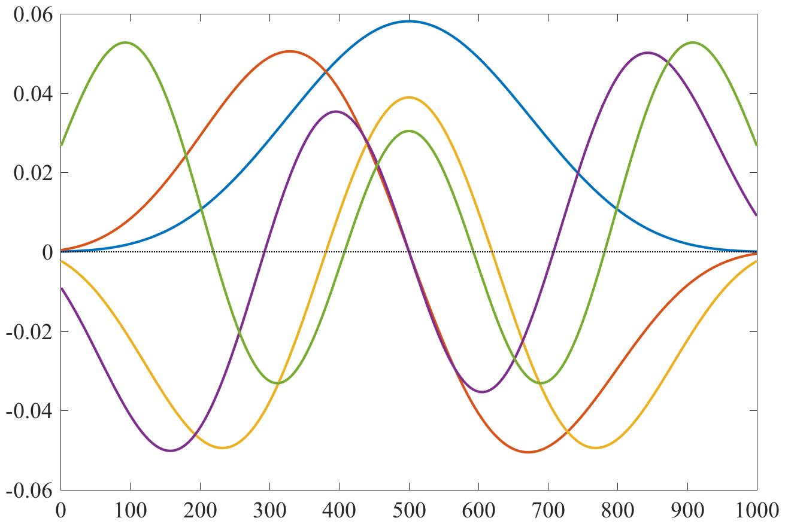 `Here $K=5$` *Slepian* tapers are shown. These are orthogonal functions that become more oscillatory for increasing `$K$.` --- class: left, .toc[[✧](#toc)] #The Multitaper Method The multitaper method controls the degrees of spectral *smoothing* and *averaging* through changing the properties of the tapers. The multitaper method is generally the favorite spectral analysis method among those researchers who have thought the most about spectral analysis. It is recommended because **(i)** it avoids the deficiencies of the periodogram, **(ii)** it has, in a certain sense, provable optimal properties, **(iii)** it is very easy to implement and adjust, **(iv)** it allows an estimate of the spectrum for the period equal to the length of your time series (no need to divide up your time series as for the Welch's method!). See .cite[Thomson (1982)], .cite[Park et al. (1987)], and .cite[Percival and Walden, *Spectral Analysis for Physical Applications*]. <!-- A very nice introductory paper is Park et al. (1987), “Frequency-dependent polarization analysis of high-frequency seismograms”, *Journal of Geophysical Research C*. --> <!--.cite[Thomson (1982), Park et al. (1987a) ] --> --- class: left, .toc[[✧](#toc)] #Example 22-year time series of Agulhas current transport <center></center> --- class: left, .toc[[✧](#toc)] #Example: periodogram Linear plot 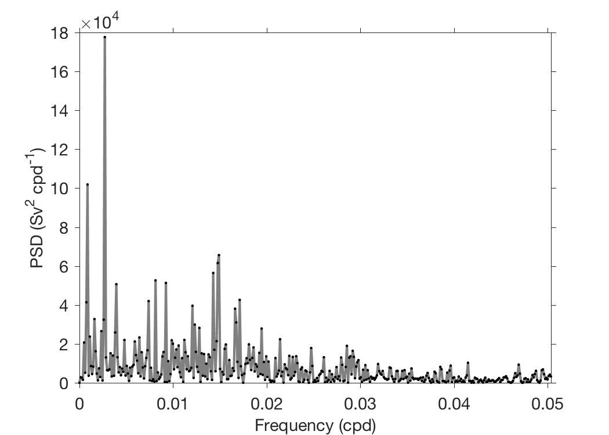 --- class: left, .toc[[✧](#toc)] #Example: periodogram Log-log plot 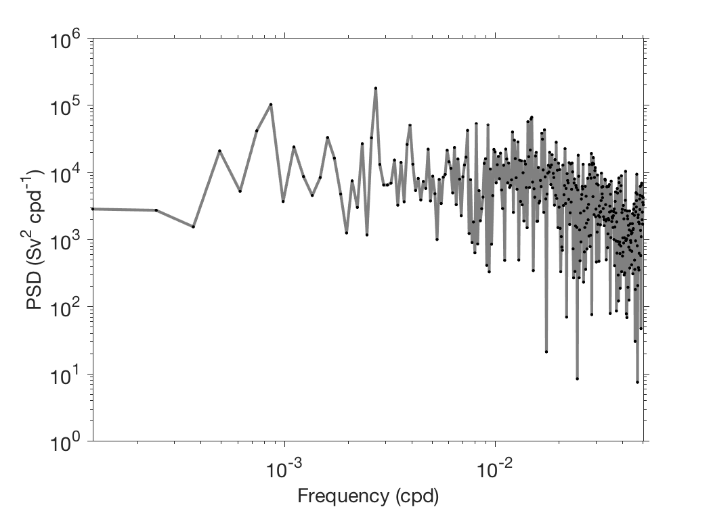 --- class: left, .toc[[✧](#toc)] #Example: multitaper Effect of first taper 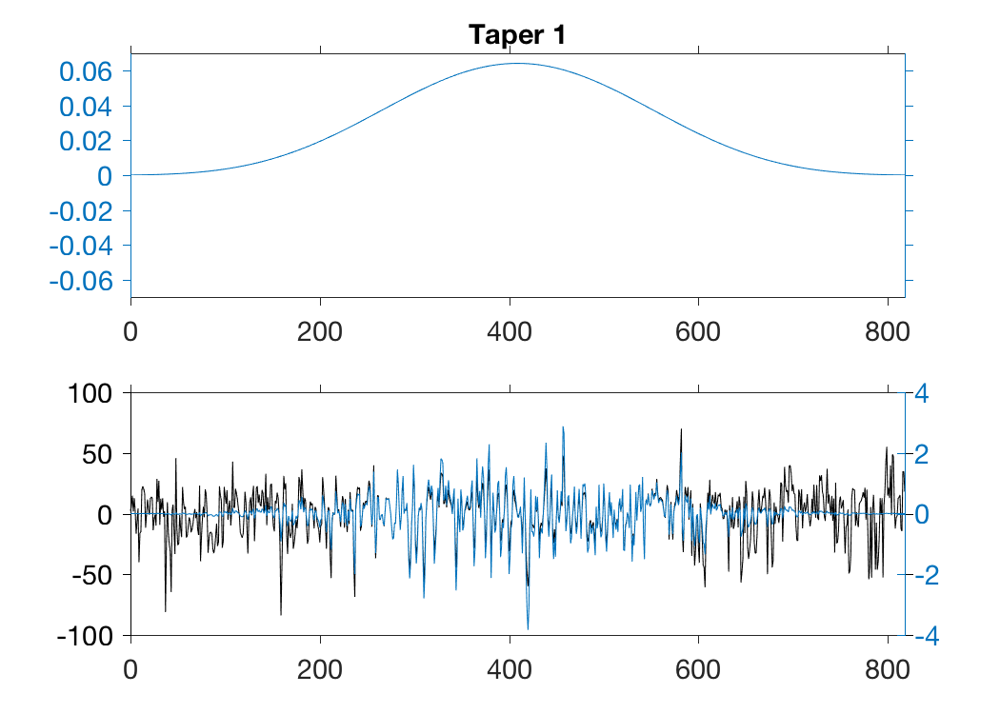 --- class: left, .toc[[✧](#toc)] #Example: multitaper Second taper 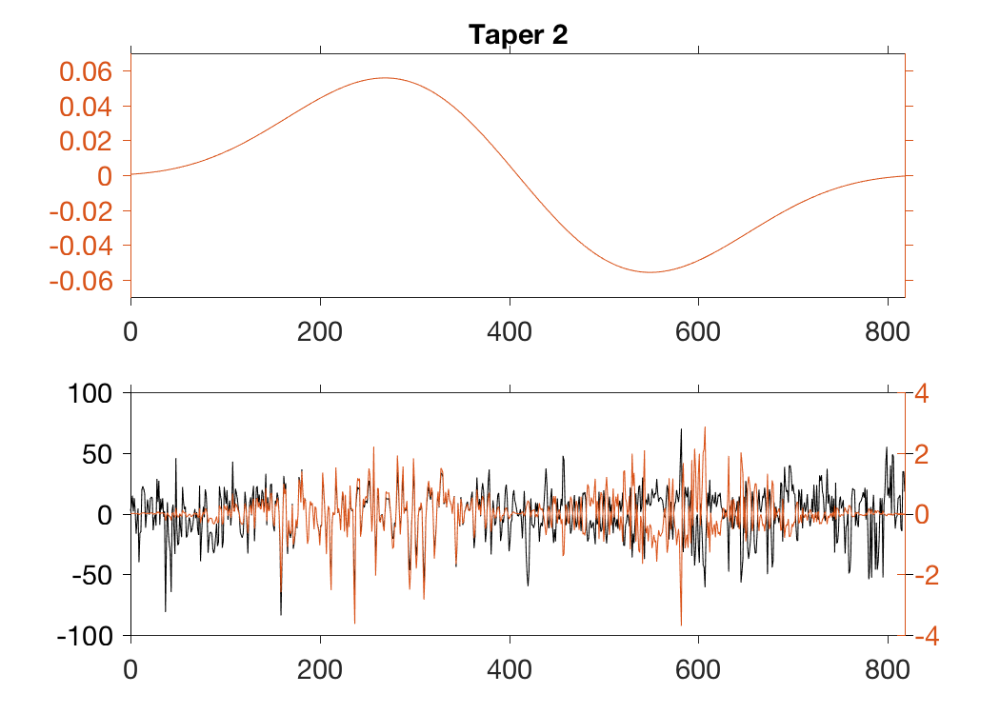 --- class: left, .toc[[✧](#toc)] #Example: multitaper Third taper 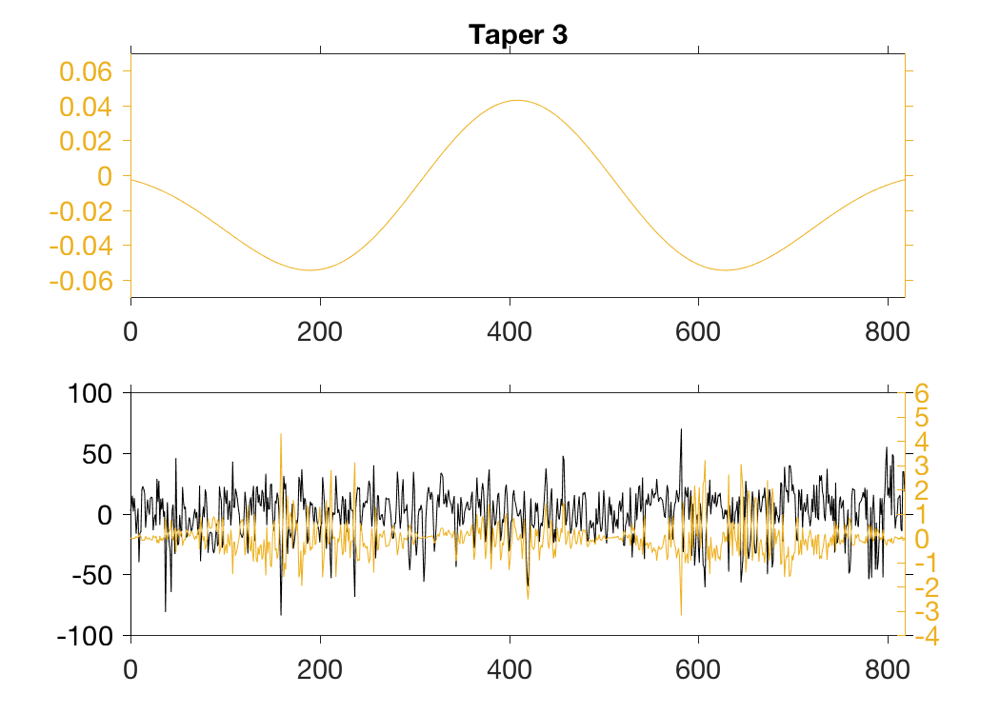 --- class: left, .toc[[✧](#toc)] #Example: multitaper Fourth taper 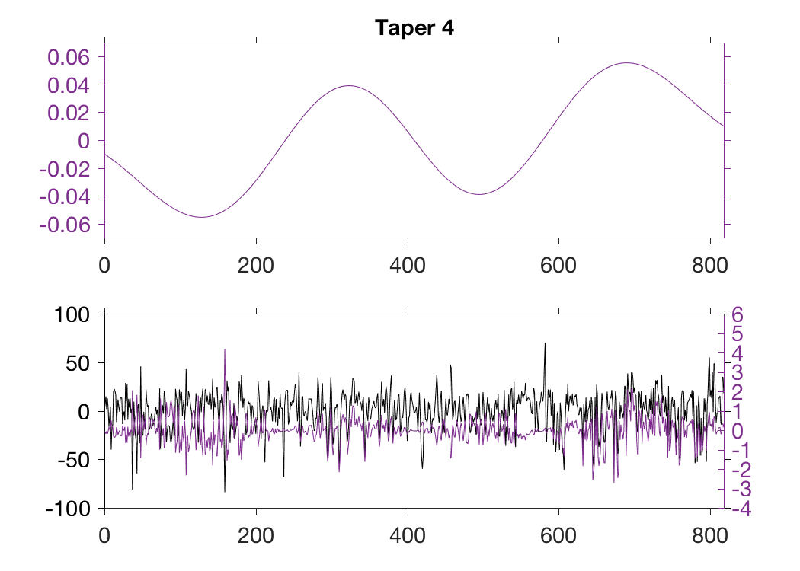 --- class: left, .toc[[✧](#toc)] #Example: multitaper Fifth taper 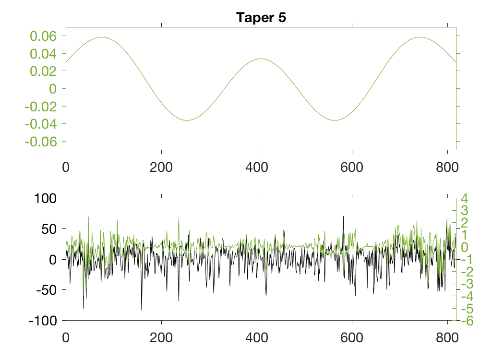 --- class: left, .toc[[✧](#toc)] #Example: multitaper Fifth taper --- class: left, .toc[[✧](#toc)] #Example: multitaper Eigen spectra (colors) and multitaper estimate (black) 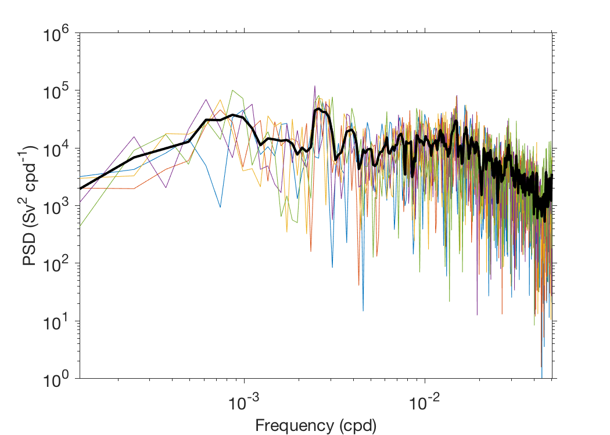 --- class: left, .toc[[✧](#toc)] #Example: period. vs mt Periodogram (gray) vs multitaper (black) --- name: bivariate class: center, middle, .toc[[✧](#toc)] # 4. Bivariate time series --- class: left, .toc[[✧] #Vector and complex notations What if your process of interest is composed of two time series, let's say `$x(t)$` and `$y(t)$`? As in the vector components of ocean currents or atmospheric winds: `\begin{eqnarray} \mathbf{z}(t) = \left[ \begin{matrix} x(t) \\ y(t) \end{matrix}\right] \end{eqnarray}` Often, a *bivariate* time series is conveniently written as a complex-valued time series: `\[ z(t) = x(t) + i y(t) = |z(t)| e^{i \arg{(z)}},\]` where `$i = \sqrt{-1}$` and `$\arg{(z)}$` is the *complex argument* (or polar angle) of `$z$` in the interval `$[-\pi,+\pi]$`. --- class: left, .toc[[✧](#toc)] #The Mean of Bivariate Data The sample mean of the vector time series `$\mathbf{z}_n$` is also a vector, `\[\mathbf{\mu}_\mathbf{z} \equiv \frac{1}{N}\sum_{n=0}^{N-1}\mathbf{z}_n=\begin{bmatrix} \hat{\mu}_x \\ \,\hat{\mu}_y\,\end{bmatrix}\]` that consists of the *sample means* of the `$x_n$` and `$y_n$` components of `$\mathbf{z}_n$`. --- class: left, .toc[[✧](#toc)] #Variance of Bivariate Data The *variance* of the vector-valued times series `$\mathbf{z}_n$` is not a scalar or a vector, it is a `$2\times 2$` *matrix* `\[\mathbf{\Sigma}\equiv \frac{1}{N}\sum_{n=0}^{N-1}\left(\mathbf{z}_n-\mathbf{\mu}_\mathbf{z}\right)\left(\mathbf{z}_n-\mathbf{\mu}_\mathbf{z}\right)^T \]` where “`$T$`” is the *matrix transpose*, `$\mathbf{z}_n =\begin{bmatrix} x_n \\ y_n \end{bmatrix}$`, `$\mathbf{z}_n^T =\begin{bmatrix} x_n & y_n \end{bmatrix}$`. Carrying out the matrix multiplication leads to `\[\mathbf{\Sigma}= \frac{1}{N}\sum_{n=0}^{N-1} \begin{bmatrix} \left(x_n-\hat{\mu}_x\right)^2 & \left(x_n-\hat{\mu}_x\right)\left(y_n-\hat{\mu}_y\right)\\ \left(x_n-\hat{\mu}_x\right)\left(y_n-\hat{\mu}_y\right) &\left(y_n-\hat{\mu}_y\right)^2 \end{bmatrix} \]` The diagonal elements of `$\mathbf{\Sigma}$` are the sample variances `$\sigma_x^2$` and `$\sigma_y^2$`, while the off-diagonal gives the *covariance* between `$x_n$` and `$y_n$`. Note that the two off-diagonal elements are identical. --- class: left, .toc[[✧](#toc)] # Fourier transform The Fourier theory presented earlier for *scalar* time series is completely applicable to complex-valued time series, in discrete form (`$N$` even): `\begin{eqnarray} z_n & = & \frac{1}{N \Delta_t}\sum_{m=0}^{N/2} Z_m e^{i2\pi m n/N} & + \frac{1}{N \Delta_t}\sum_{m=N/2+1}^{N-1} Z_m e^{i2\pi m n/N}\\ & = & \frac{1}{N \Delta_t}\sum_{m=0}^{N/2} Z^+_m e^{i2\pi m n/N} & + \frac{1}{N \Delta_t}\sum_{m=1}^{N/2-1} Z^-_m e^{-i2\pi m n/N}. \end{eqnarray}` The first sum corresponds to **positive** frequencies, and the second sum to the associated **negative** frequencies (except the zero and Nyquist frequencies for `$m=0,N/2$`). --- class: left, .toc[[✧](#toc)] #Rotary Spectra `\begin{equation} z_n = \frac{1}{N \Delta_t}\sum_{m=0}^{N/2} Z^+_m e^{i2\pi m n/N} + \frac{1}{N \Delta_t}\sum_{m=1}^{N/2-1} Z^-_m e^{-i2\pi m n/N}. \end{equation}` This introduces the concept of *rotary spectrum*: `\begin{eqnarray} S(f_m>0) \equiv S^+(f_m) & \equiv & \lim_{N \rightarrow \infty} E\left\{ \frac{|Z^+_m|^2}{N} \right\} \quad \text{counterclockwise spectrum,}\\ S(f_m<0) \equiv S^-(-f_m) & \equiv & \lim_{N \rightarrow \infty} E\left\{ \frac{|Z^-_m|^2}{N} \right\} \quad \text{clockwise spectrum.}\\ \end{eqnarray}` `\[f_m = \frac{m}{N\Delta_t}, \quad m = 0,\ldots,N/2\]` This is very useful in geophysical fluid mechanics because counterclockwise motions are *cyclonic* in the northern hemisphere and clockwise motions are *anticyclonic*, and vice-versa in the southern hemisphere. --- class: left, .toc[[✧](#toc)] #Rotary variance Imagine you have only two opposite components present in your time series at frequency `$f_k$`: `\begin{eqnarray} z_n & = & Z_k^+ e^{i2\pi k n /N} + Z_k^- e^{-i2\pi k n /N} \\ & = & \left\{A^+ e^{i \phi^+} \right\} e^{i2\pi k n /N} + \left\{A^- e^{i \phi^-}\right\}e^{-i2\pi k n /N} \\ & = & e^{i\theta}\left\{ A \cos (2\pi k n/N + \phi) + i B \sin(2\pi k n/N + \phi) \right\} \end{eqnarray}` where `\begin{eqnarray} \theta & = & (\phi^+-\phi^-)/2\\ \phi & = & (\phi^++\phi^-)/2\\ A&=& A^++A^-\\ B &= & A^+-A^-. \\ \end{eqnarray}` --- class: left, .toc[[✧](#toc)] #Elliptic variance `\[ z_n = e^{i\theta}\left\{ A \cos (2\pi k n/N + \phi) + i B \sin(2\pi k n/N + \phi) \right\}\]` This is the equation for an ellipse oriented at an angle `$\theta$` from the `$x$` axis, with semi-major and semi-minor axes $A$ and $B$, respectively, rotating at frequency $f_k = k/(N\Delta_t)$, in the direction given by the sign of `$B$`. <center>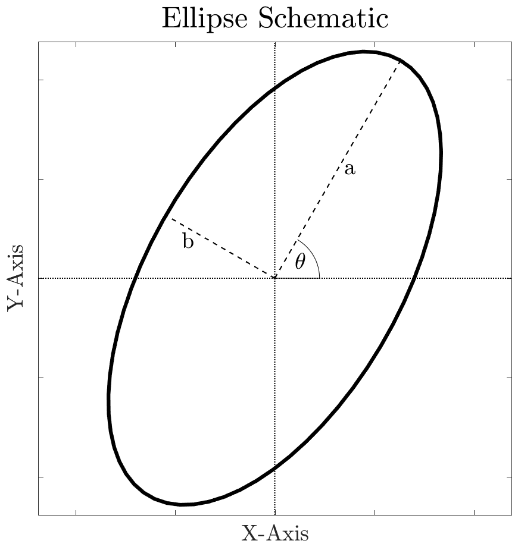</center> See more details about elliptic variance in JML's Oslo lectures. --- class: left, .toc[[✧](#toc)] #Cartesian Spectra Rotary and Cartesian spectra are two alternate representation of the variance of the complex time series: `\begin{equation} z_n = \frac{1}{N \Delta_t}\sum_{m=0}^{N/2} Z^+_m e^{i2\pi m n/N} + \frac{1}{N \Delta_t}\sum_{m=1}^{N/2-1} Z^-_m e^{-i2\pi m n/N}. \end{equation}` `\begin{equation} \widehat{S}^+_m \equiv \frac{1}{N}\left|Z^+_m\right|^2, \quad \widehat{S}^-_m \equiv \frac{1}{N}\left|Z^-_m\right|^2 \quad \text{Rotary spectra estimates} \end{equation}` `\begin{equation} z_n = x_n+ i y_n = \frac{1}{N \Delta_t}\sum_{m=0}^{N-1} X_m e^{i2\pi m n/N} + i \left\{ \frac{1}{N \Delta_t}\sum_{m=0}^{N-1} Y_m e^{i2\pi m n/N}\right\}. \end{equation}` `\begin{equation} \widehat{S}^x_m \equiv \frac{1}{N}\left|X_m\right|^2, \quad \widehat{S}^y_m \equiv \frac{1}{N}\left|Y_m\right|^2 \quad \text{Cartesian spectra estimates} \end{equation}` --- class: left, .toc[[✧](#toc)] #Parseval theorem For bivariate data, the discrete form of the Parseval theorem takes the form: `\begin{eqnarray} \Delta_t \sum_{n=0}^{N-1} |z_n|^2 = \frac{1}{N\Delta_t} \sum_{m=0}^{N-1} |Z_m|^2 & = & \frac{1}{N\Delta_t} \sum_{m=0}^{N-1} |X_m|^2 + \frac{1}{N\Delta_t} \sum_{m=0}^{N-1} |Y_m|^2\\ & = & \frac{1}{N\Delta_t} \sum_{m=0}^{N/2} |Z^+_m|^2 + \frac{1}{N\Delta_t} \sum_{m=1}^{N/2-1} |Z^-_m|^2 \\ \end{eqnarray}` -- This shows that the total variance of the bivariate process is recovered completely by the Cartesian, or rotary Fourier representation. --- class: left, .toc[[✧](#toc)] #Example Hourly current meter record at 110 m depth from the Bravo mooring in the Labrador Sea, .cite[Lilly and Rhines (2002)] <center>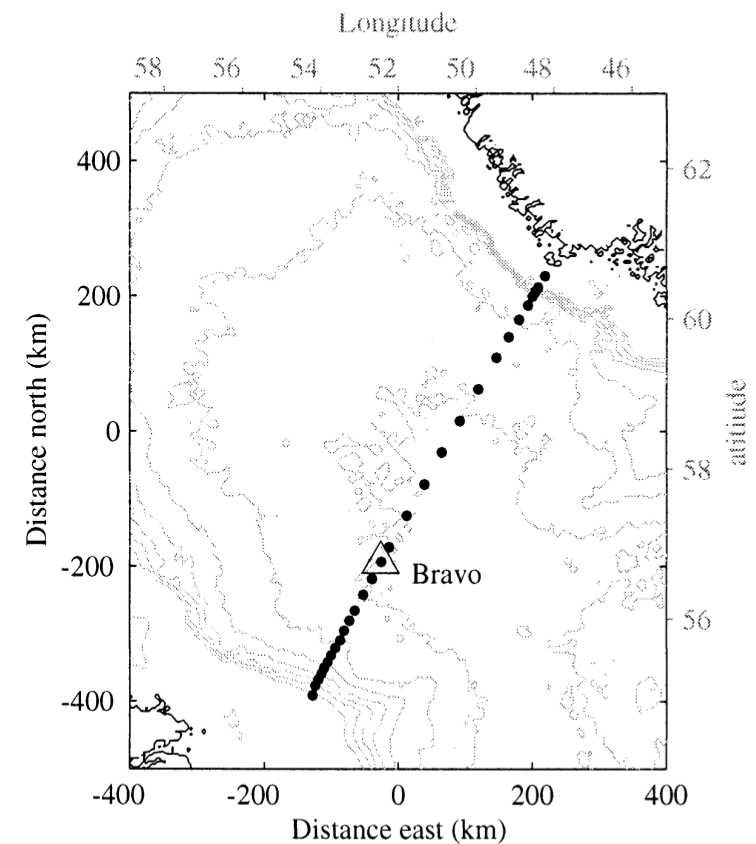</center> --- class: left, .toc[[✧](#toc)] #Example 1 Hourly current meter record at 110 m depth from the Bravo mooring in the Labrador Sea, .cite[Lilly and Rhines (2002)] <center>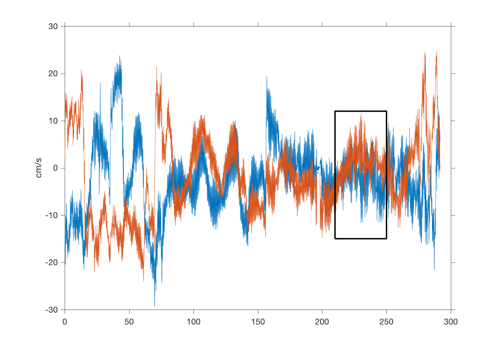</center> --- class: left, .toc[[✧](#toc)] #Example 1 Hourly current meter record at 110 m depth from the Bravo mooring in the Labrador Sea, .cite[Lilly and Rhines (2002)] <center>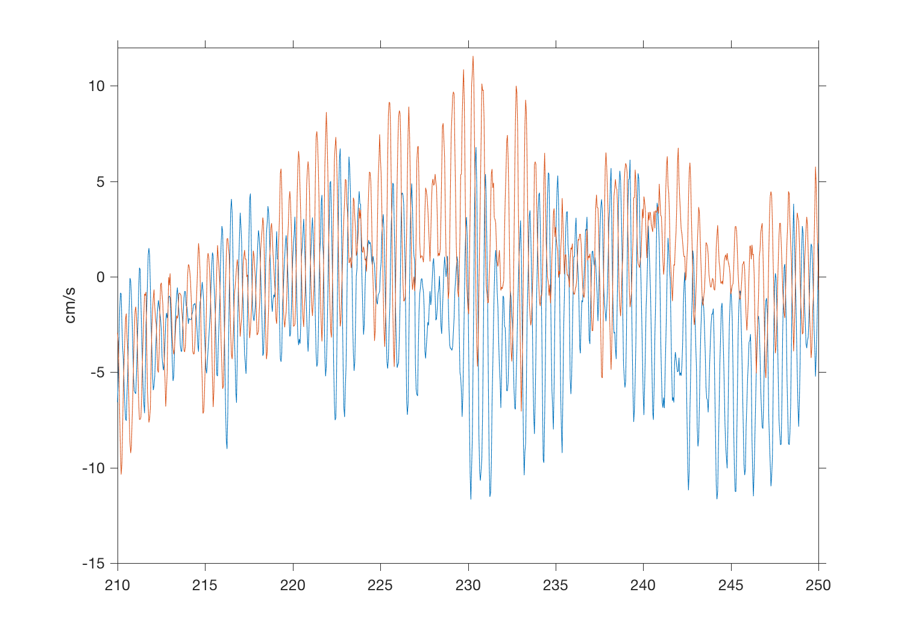</center> --- class: left, .toc[[✧](#toc)] #Observable Features 1. The data consists of two time series that are similar in character. 1. Both time series present a superposition of scales. 1. At the smallest scale, there is an apparently oscillatory roughness which changes its amplitude in time. 1. A larger scale presents itself either as localized features, or as wavelike in nature. 1. Several sudden transitions are associated with isolated events. 1. Zooming in, we see the small-scale oscillatory behavior is sometimes `$90^\circ$` degrees out of phase, and sometimes `$180^\circ$`. 1. The amplitude of this oscillatory variability changes with time. The fact that the oscillatory behavior is not consistently `$90^\circ$` out of phase removes the possibility of these features being purely inertial oscillations. The amplitude modulation suggests tidal beating. -- The isolated events are eddies, which cause the currents to suddenly rotate as they pass by. The oscillations are due to tides and internal waves. --- class: left, .toc[[✧](#toc)] #Cartesian vs Rotary Spectra <center>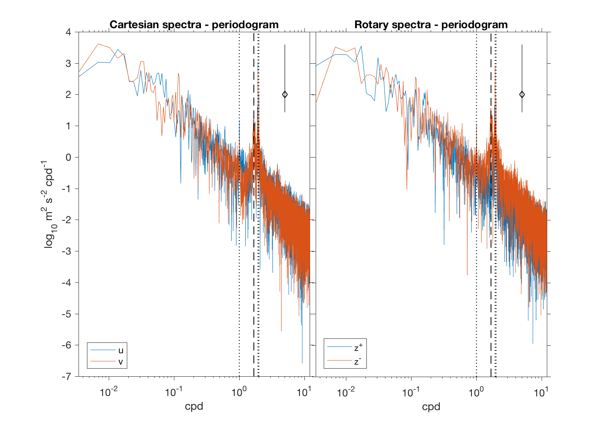</center> --- class: left, .toc[[✧](#toc)] #Cartesian vs Rotary Spectra <center>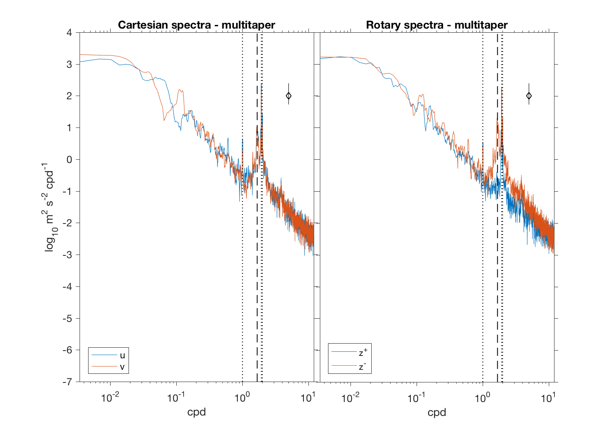</center> --- class: left, .toc[[✧](#toc)] #Cartesian vs Rotary Spectra <center>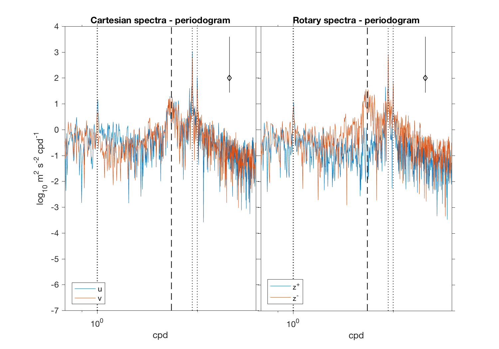</center> --- class: left, .toc[[✧](#toc)] #Cartesian vs Rotary Spectra <center>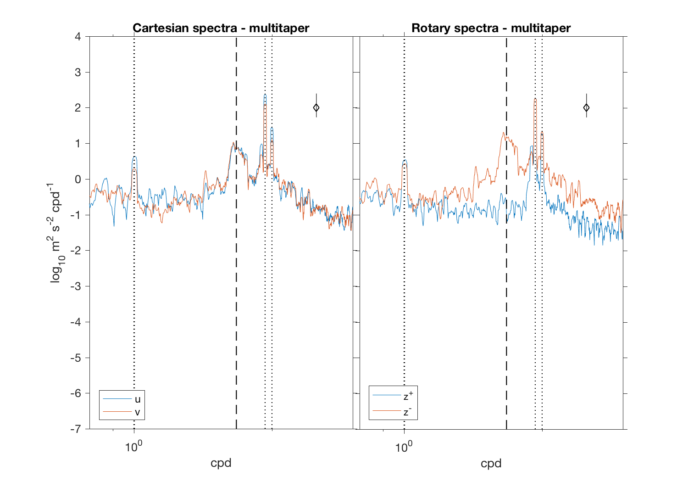</center> --- class: left, .toc[[✧](#toc)] #Example Global zonally-averaged rotary spectra from hourly drifter velocities, see .cite[Elipot et al. 2016]. <center>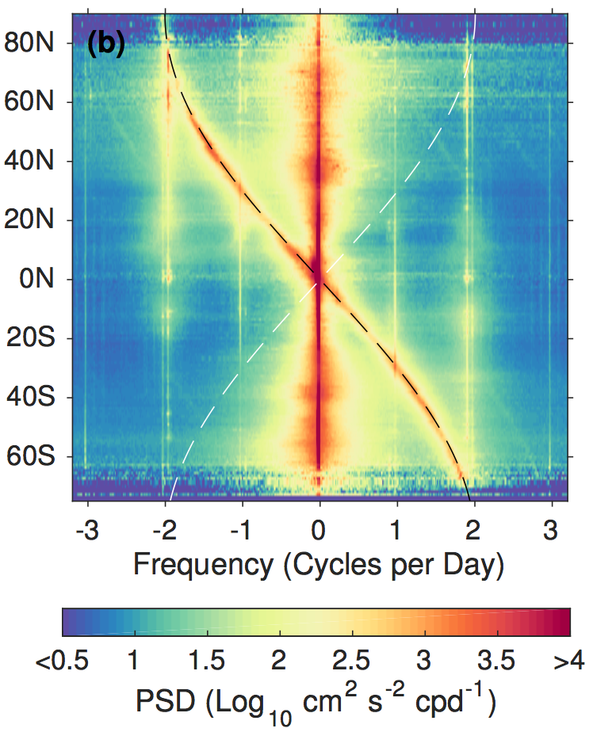</center> --- name: epilogue class: left, .toc[[✧](#toc)] #Epilogue Many important topic of time series analyses were not discussed, namely the topics of *aliasing*, spectral blurring, filtering, and uncertainties in spectral estimates. Some of these are covered in JML's Oslo lecture which can be viewed online at [{www.jmlilly.net/talks/oslo/index.html}](http://www.jmlilly.net/talks/oslo/index.html). During the practical session this afternoon we will cover the material presented this morning, as well cover some of the topic of filtering. Thank you! Shane Elipot email: <tt>selipot@rsmas.miami.edu</tt> The slides of this presentation are available at [{rsmas.miami.edu/users/selipot/}](http://rsmas.miami.edu) or [{selipot.github.io}](http://selipot.github.io) --- name: practical class: center, middle, .toc[[✧](#toc)] #Slides for Pratical session --- class: left, .toc[[✧](#toc)] # Code and Data For the practical session this afternoon you will need some Matlab code and data to be downloaded from my GitHUb depository called *Tromso*. [https://github.com/selipot/tromso](https://github.com/selipot/tromso). Click on the green button “Clone or download” to download a zipped archive, expand it, and copy the directory where you want. Please do this before coming to the session this afternoon. --- class: left, .toc[[✧](#toc)] # Continuous Fourier We have considered the FT for a discrete time series `$x_n$` but it extends to continuous time series `$x(t)$`: `\begin{equation} x(t) =\frac{1}{2\pi} \int_{-\infty}^{\infty} X(\omega)\, e^{i\omega t} d\omega,\quad\quad X(\omega)\equiv \int_{-\infty}^{\infty} x(t)\, e^{-i\omega t} d t. \end{equation}` Note that here we are using radian frequency `$\omega$`. -- The continuous notation is easier to understand the mechanics of *filtering* a time series, as well as spectral *blurring*. -- But first, we need to understand the concept of convolution. --- class: left, .toc[[✧](#toc)] # The Convolution Integral The *convolution* `$h(t)$` of a function `$f(t)$` and `$g(t)$` is defined as: `\[ h(t)\equiv \int_{-\infty}^{\infty} f(\tau) g(t-\tau) d\tau.\]` Note that in convolution, the order does not matter and we can show that `\[ h(t)\equiv \int_{-\infty}^{\infty} g(\tau) f(t-\tau) d\tau\]` This mathematical operation is actually what is being done when “smoothing” data. (It is like sliding the iron on the tablecloth, or pulling the tablecloth under a static iron). --- class: left, .toc[[✧](#toc)] # Convolution Theorem The *convolution theorem* states convolving `$f(t)$` and `$g(t)$` in the time domain is the same as a *multiplication* in the frequency domain. Let `$F(\omega)$` and `$G(\omega)$` be the Fourier transforms of `$f(t)$` and `$g(t)$`, respectively. It can be shown that if `\[h(t)= \int_{-\infty}^{\infty} f(\tau) g(t-\tau) d\tau\]` then the fourier transform of `$h(t)$` is `\[ H(\omega) = F(\omega) G(\omega).\]` -- This result is key to understand what happens in the Fourier domain when you perform a time-domain smoothing. --- class: left, .toc[[✧](#toc)] #Smoothing Now we consider what happens when we *smooth* the time series `$x(t)$` by the filter `$g(t)$` to obtain a smoothed version `$\widetilde x(t)$` of your time series: `\begin{eqnarray} \widetilde x(t)= \int_{-\infty}^{\infty} x(t-\tau) g(\tau) d\tau & \equiv & \frac{1}{2\pi} \int_{-\infty}^{\infty} \widetilde{X}(\omega) \, e^{i\omega t} d\omega.\\ &=& \frac{1}{2\pi}\int_{-\infty}^{\infty} X(\omega) G(\omega) \, e^{i\omega t} d\omega,\\ \end{eqnarray}` by the convolution theorem. When we perform simple smoothing, we are also reshaping the Fourier transform of the signal by *multiplying* its Fourier transform by that of the smoothing window. --- class: left, .toc[[✧](#toc)] #Three Window examples <center>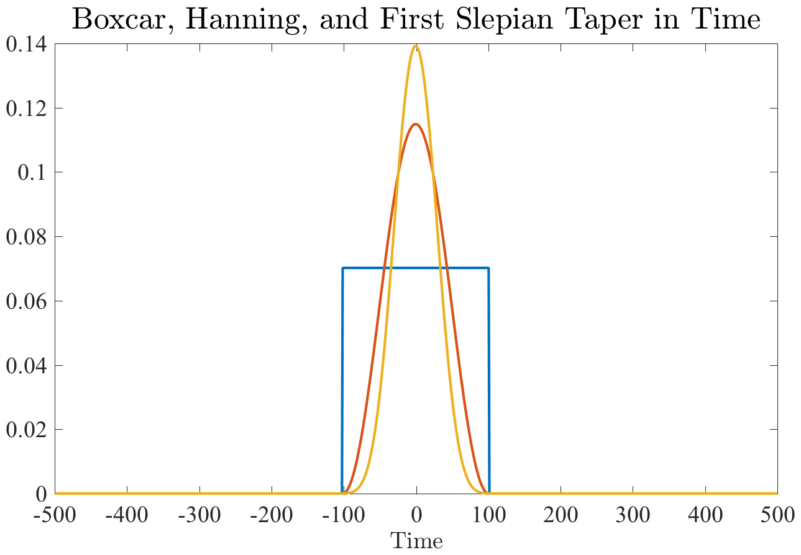</center> --- class: left, .toc[[✧](#toc)] #Three Tapering Windows <center>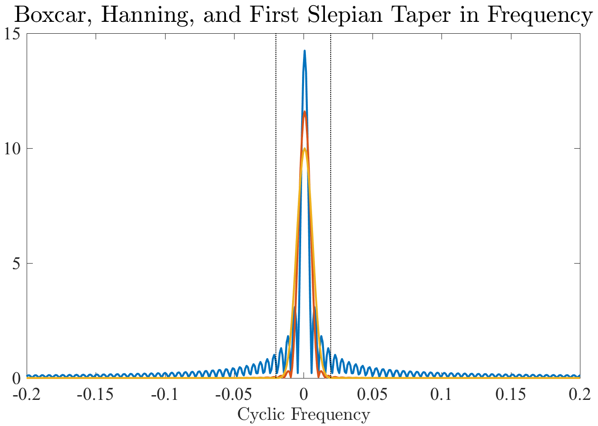</center> --- class: left, .toc[[✧](#toc)] #Three Tapering Windows <center>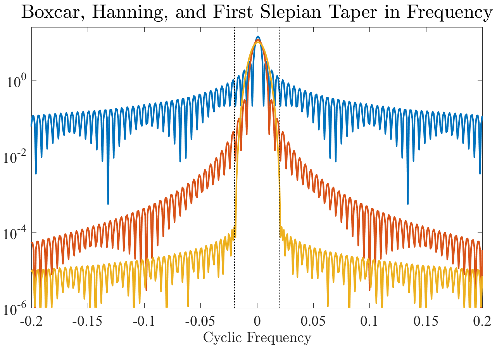</center> --- class: left, .toc[[✧](#toc)] #Lowpass & Highpass Filters From the convolution theorem, we understand that filtering will keep the frequencies near zero but reject higher frequencies. For this reason they are called *low-pass filters*. The reverse type of filtration, rejecting the low frequencies but keeping the high frequencies, is called *high-pass filtering*. The residual `$\breve x(t)\equiv x(t) -\widetilde x(t)$` is an example of a high-pass filtered time series. In practice, to find the frequency form of your filter, you *pad it with zeros* so that it becomes the same length as your time series, and then you take its discrete Fourier transform. --- class: middle, center, .toc[[✧](#toc)] # Back to practical! --- class: left, .toc[[✧](#toc)] # Convolution Theorem II This theorem is reciprocal: is your *multiply* in the time domain, you *convolve* in the Fourier domain. It can be shown that if `\[ h(t) = f(t) g(t)\]` then the fourier transform of `$h(t)$` is `\[ H(\omega) = \int_{-\infty}^{\infty} F(\nu) G(\omega -\nu) d\omega.\]` This result is key to understand what happens in the Fourier domain when you try to estimate spectra, i.e. *spectral bluring*. --- class: left, .toc[[✧](#toc)] # Bandpass filtering We can use the convolution theorem to build a band-pass filter. We want to modify the lowpass filter `$g(t)$` so that its Fourier transform is localized not about zero, but about some non-zero frequency `$\omega_o$`. To do this, we multiply `$g(t)$` by a complex exponential. It can be shown (see Oslo lectures) that the Fourier transform of `$g(t) e^{i\omega_o t}$` is `$G(\omega-\omega_o)$`, which is localized around `$\omega_o$`. Thus, a convolution with `$g(t) e^{i\omega_o t}$` will *bandpass* the data in the vicinity of `$\omega_o$.` Note that a lowpass filter is a particular type of bandpass in which the center of the *pass band* has been chosen as zero frequency. --- class: middle, center, .toc[[✧](#toc)] # Back to practical! --- class: left, .toc[[✧](#toc)] #Effect of Truncation Now imagine instead that we have a *continuously* sampled time series of length `$T$`, that is, we have `$z(t)$` but only between times `$-T/2$` and `$T/2$`. This is like multiplying `$z(t)$` by a function `$g(t)$` which is equal to one between `$-T/2$` and `$T/2$` and 0 otherwise: `\[ z_T(t) = g(t) \times z(t) \]` We will denote this truncted version of `$z(t)$` by `$z_T(t)$`. How does the spectrum compare of `$z_T(t)$` compare with that of `$z(t)$`? -- Q. Using one of the windows encountered today, how can we express the relationship between `$z(t)$` and `$z_T(t)$`? -- Q. Therefore, using another theorem learned today, what is the difference between their spectra? --- class: left, .toc[[✧](#toc)] #Spectral Blurring The spectrum of the truncated time series is *blurred* through smoothing with a function `$F_{T}(\omega)$` that is the *square* of the Fourier transform of a boxcar: `\[\widetilde S(\omega) \equiv\frac{1}{2\pi}\int_{-\infty}^\infty S(\nu) \,F_{T}(\nu-\omega)\, d \nu.\]` The smoothing function, which is known as the *Fejér kernel* `\[F_T(\omega)\equiv \int_{-T}^{T}\left(1-\frac{|\tau|}{T}\right) \, e^{i\omega\tau} \, d \tau =\frac{1}{T}\frac{\sin^2(\omega T/2)}{(\omega/2)^2}\]` is essentially a squared version of the “sinc” or `$\sin(x)/x$` function. However, `$\sin(x)/x$` is not a very smooth function at all! --- class: left, .toc[[✧](#toc)] #Multitapering Revisited We can now understand the purpose of multitapering. *Doing nothing* in your spectral estimate is equivalent to *truncating* your data, thus implicitly *smoothing* the true spectrum by an extremely undesirable function! The Fejér kernel has a major problem in that it is not *well concentrated*. Its “side lobes” are large, leading to a kind of error called *broadband bias*. This is the source of the error shown in the motivating example. Next we take a look at three different tapering functions and their squared Fourier transforms. The broadband bias is most clear if we use logarithmic scaling for the `$y$`-axis. --- class: left, .toc[[✧](#toc)] #Three Tapering Windows <center></center> --- class: left, .toc[[✧](#toc)] #Three Tapering Windows <center></center> --- class: left, .toc[[✧](#toc)] #Three Tapering Windows <center></center>